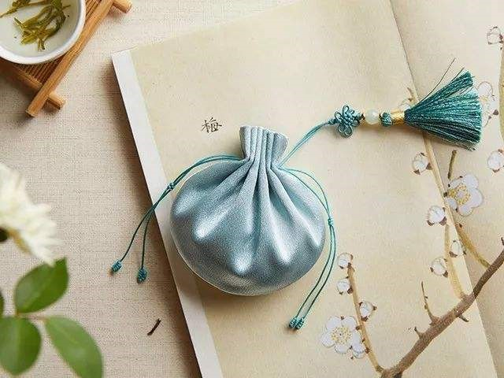
佩香囊，是端午传承的民俗，其制作与佩戴的历史至少可追溯到战国时期。屈原《离骚》中这样描述：“扈江篱与辟芷兮，纫秋兰以为佩”。其中的江篱、辟芷、秋兰均为香草，佩在这里既指香囊，也含佩带之意。
佩香囊，不但有避邪驱瘟之意，且有襟头点缀之风。香囊内有芳香开窍的中草药如辛夷、丁香、薄荷等，外包丝布，清香四溢，再以五色丝线弦扣成索，作各种不同形状，结成一串，佩戴在胸前、腰际、脐中等处，有清香、驱虫、避瘟、防病的功能。
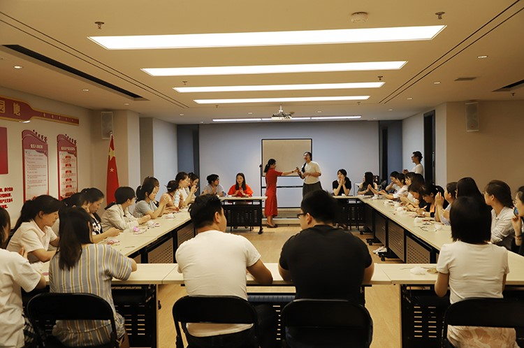
香囊DIY活动现场
6月15日下午，一场名为“倾囊‘父’出”的端午节&父亲节主题活动在陕西万盛达企业培训教室热热闹闹开场了。此次活动由公司行政人事部发起，意在以双节为媒，以香囊DIY为主题，让同事们亲身体验这一古老神秘的传统手工制作。
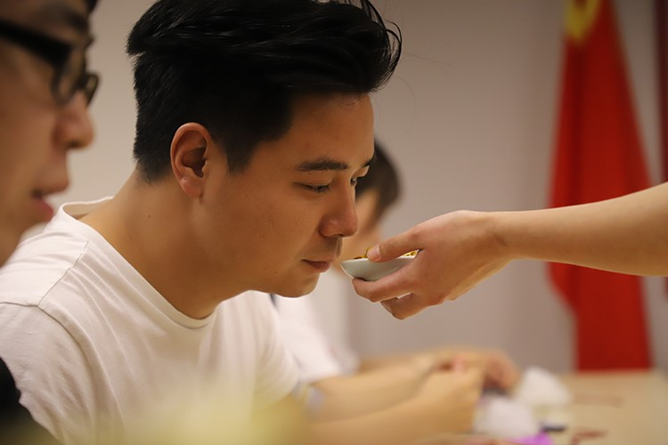
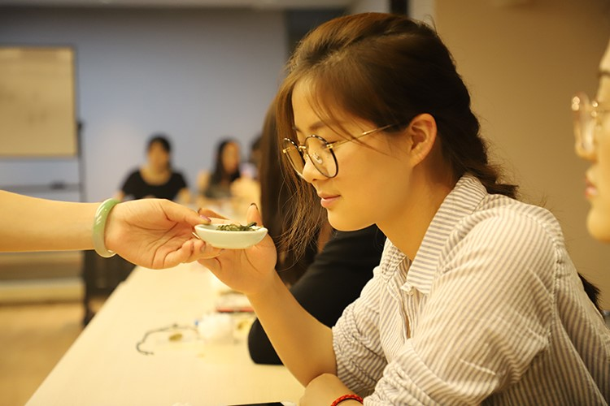
香料试闻
这可是一门考验手艺的技术活，参加活动的同事们大多是头一回亲手制作香囊，因此行政人事部特意请来专业的香囊制作老师带领大家一起制作。香囊老师从香料介绍、简单穿包等入手，为大家讲解了香囊的制作过程。
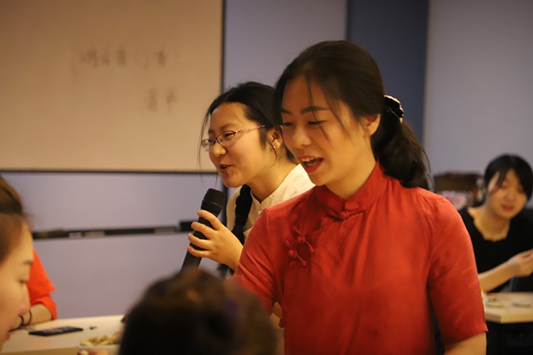
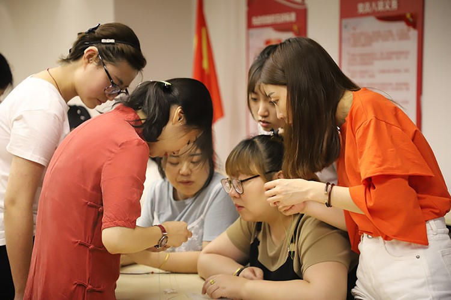
与香囊老师互动
在老师的亲身示范和指导下，同事们纷纷拿起桌上事先准备好的DIY材料，边研究边制作，并不时向老师发出提问。参与活动的大多为女同事，因此教室里几位男同事杨俊、许家豪、毛萌鑫就格外惹人注目，在缝制香囊的过程中也得到了老师和女同事们的特别关注。
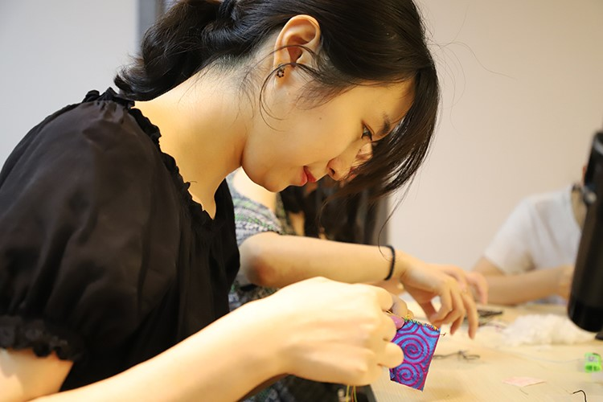
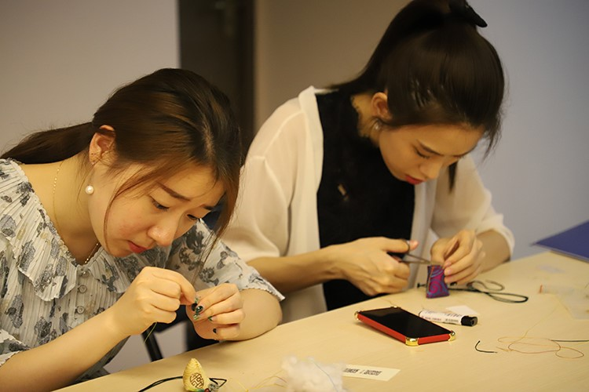
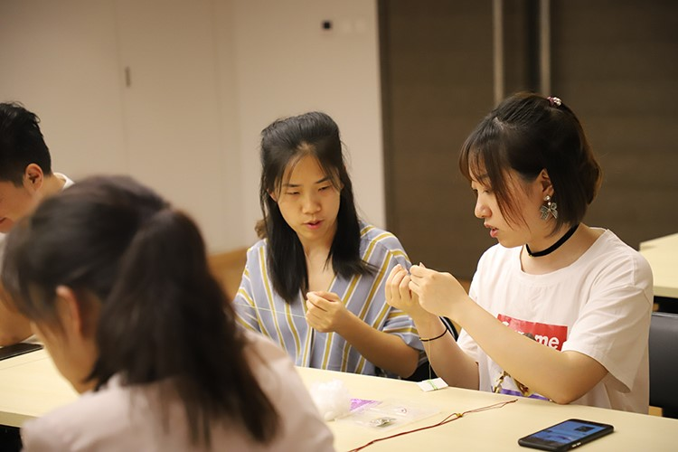
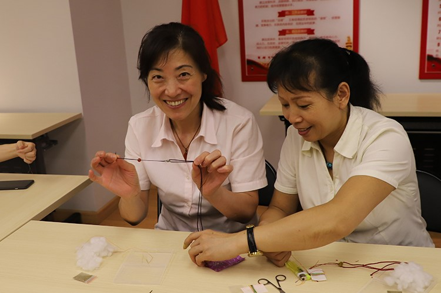
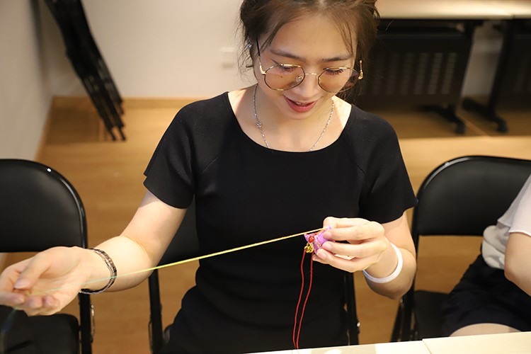
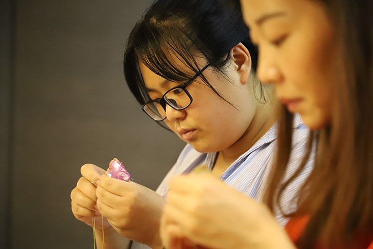
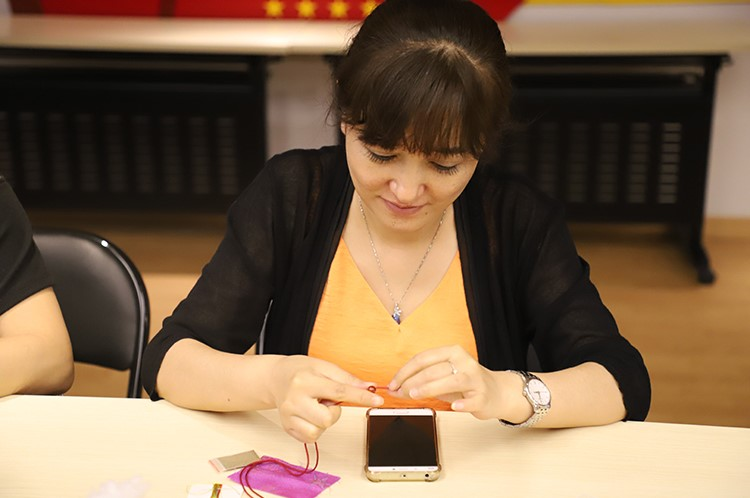
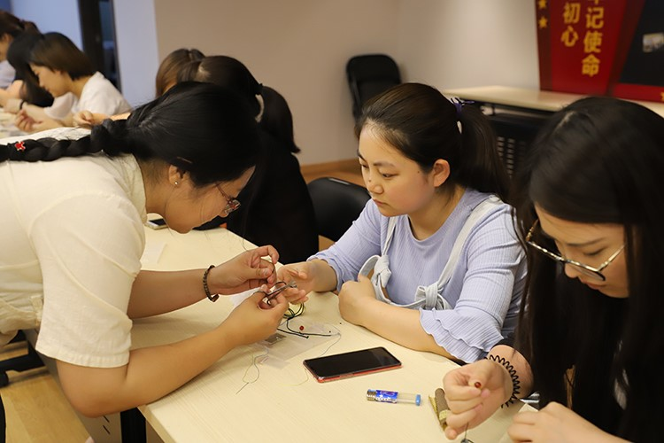
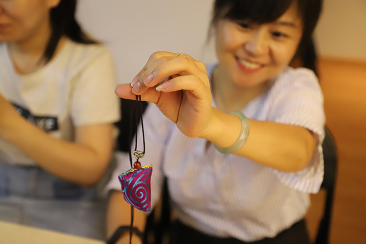
巧手做香囊
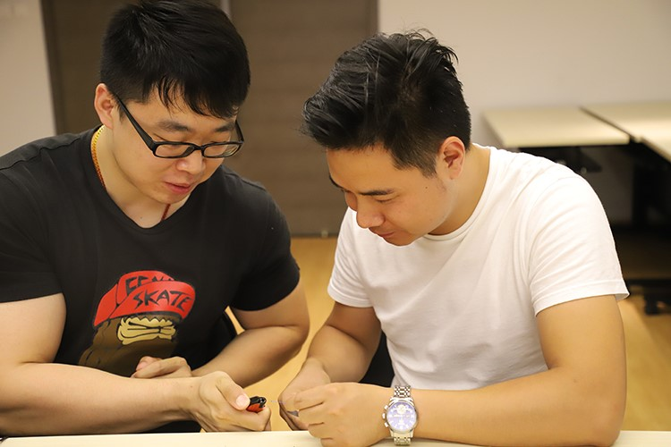
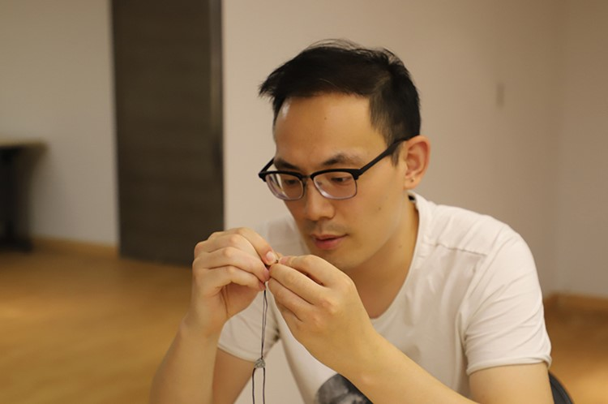
独特风景
大约1个小时后，一个个造型各异、或精致或粗犷的香囊纷纷出现在大家手中，端详着手中的香囊，每个人都格外有成就感。香囊特有的幽香在教室里弥漫开来，沁人心脾。
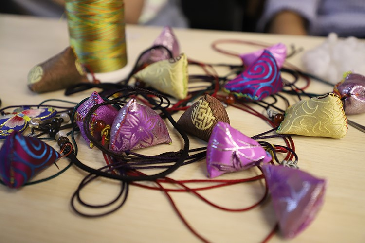
香囊成果